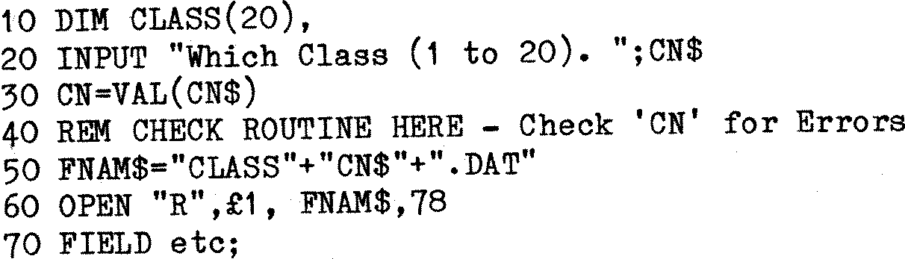
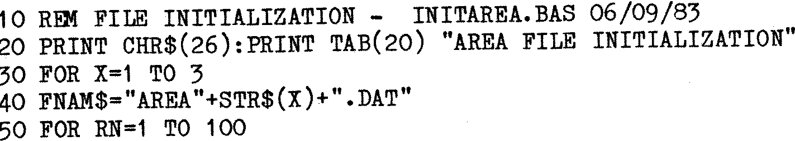

80-Bus News |
September–October 1983 · Volume 2 · Issue 5 |
| Page 21 of 67 |
|---|
The facility of moving along the Record to the next Field is used in a ‘dynamic’ way. The first value of X in the FOR-NEXT loop of line 80 is 0. SPACE$ is a’dummy’ field that ‘grows’ in size. The first time round its size is 0 bytes (since 12*0=0), so the Field BALANCE$(0) will be the 4 bytes immediately after the Field POSTCODE$. The Field DATES$(0) will be the next 8 bytes.
Note the use of ARRAYS to store the Balance and Date Fields. The second iteration of the loop will fix SPACES at 12 bytes and so Fields BALANCE$(1), DATES$(1) will be pushed just beyond BALANCES$(0), DATES$(0). The process continues until the 12 Fields (0) to (11) have been set up.
The total size of the Record is thus 70+(12*12), or 214 bytes. Data can be set into the BALANCES$(), DATESS() array Fields from loops, or directly as the program dictates. Again so long as no Data is ‘SET’ into SPACES$, then no corruption of other Data occurs.
It is always good practice to make at least two (separate disk) copies of all Files, and DATA files are no exception. It is quite easy to make the BASIC program save Records to Disks on two or more drives during processing.
Another problem that can often arise is that one might wish to run a certain program on one of a number of data files. For example I might have my Callsign files organised as “A-G.DAT”, "H-M.DAT”, "N-R.DAT” or “S-Z.DAT”. The problem here is not too great as I could offer a choice of the 4 files, and open the appropriate one. One program that I wrote needed to access 99 different small DATA files of 2 or 4K bytes each, and so a better method was needed.
When I use Random files, I always like to ‘Initialize’ my Data files before running my Data handling program for the first time (assuming that I know how many Records the file will contain). There are several reasons for this. The main reason is that I can then be sure that I know exactly what Data is in any Field of any Record. If Data is read from an unwritten and un-initialized record, sometimes peculiar things can happen, since this can contain any ‘junk’ depending what that part of the disk was used for previously. I usually set up Fields as all blank, or all ‘Periods’ as these are convenient for immediate printing. It may sometimes be useful to set up a small field as a ‘Marker’ to indicate whether the Record is Free or not. There is scope here for the use of FOR-NEXT loops.
| Page 21 of 67 |
|---|